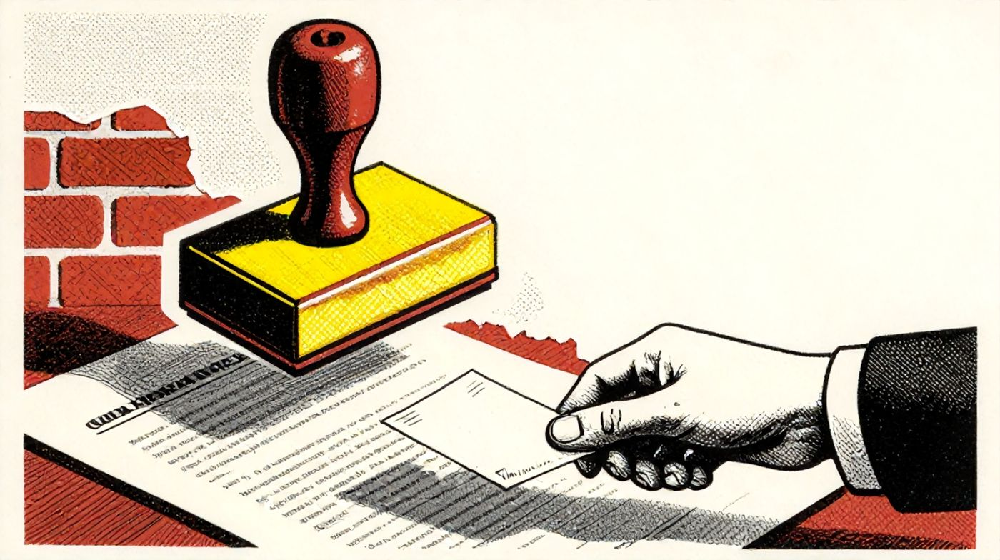
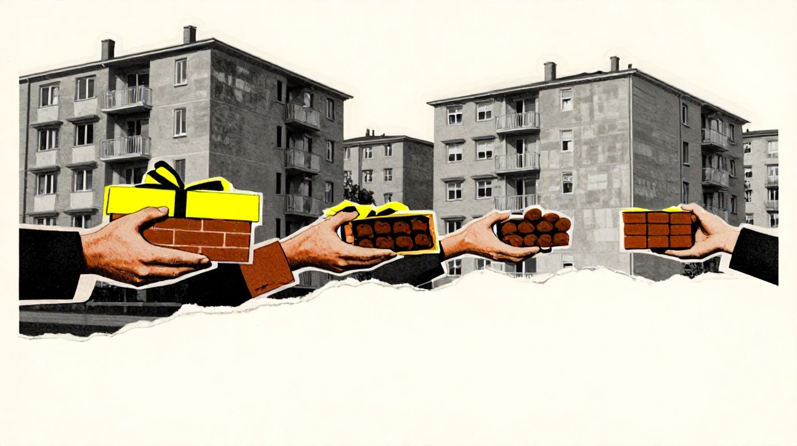
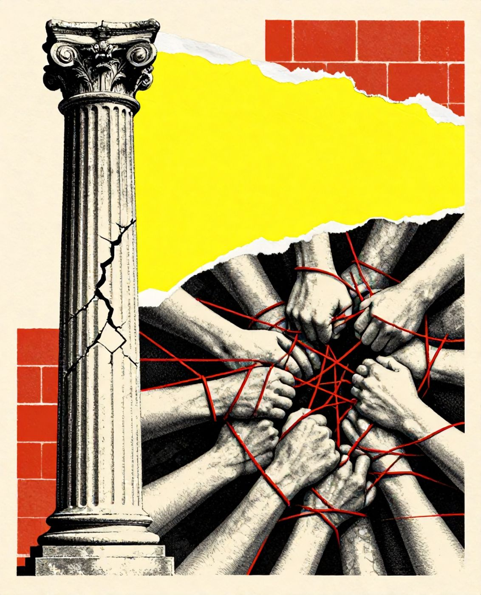
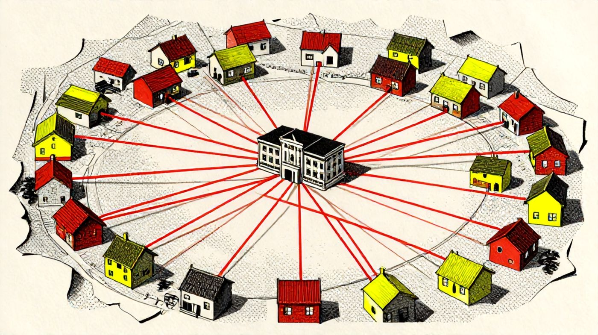
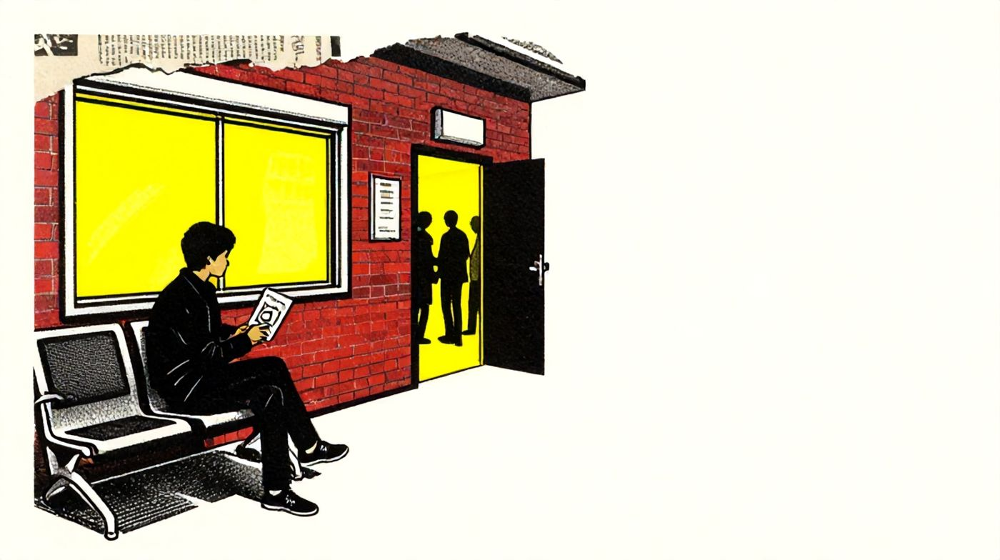

همهمان این صحنه را دیدهایم. سالنی با صندلیهای پلاستیکی، تابلویی که شمارهها را کند و بیحوصله عوض میکند، و آدمهایی که برگهی نوبت را میان انگشتها لوله کردهاند. بعد کسی بینوبت از کنار صف میگذرد، در کناری باز میشود، و چند دقیقه بعد با پروندهای مهرخورده بیرون میآید. هیچکس اعتراض نمیکند. همه میدانند. و ته دل، بیشترمان یک سؤال داریم که بلند نمیپرسیم: من چه کسی را میشناسم؟
این سؤال حالا عدد دارد. و عددش کوچک نیست.
شصت و نه و هفت دهم
این اعداد از کجا آمدهاند؟ وزارت کشور هر سال با یک پیمایش سراسری، یعنی پرسشنامهای که به نمونهای از مردم داده میشود، حال جامعه را میسنجد. پایش سال ۱۴۰۴، به گفتهی گزارشها، از حدود ۸۵ هزار نفر پرسیده است۱. دو عدد آن مستقیم به موضوع ما مربوط است:
۶۹٫۷ درصد جوانان گفتهاند با این جمله موافقاند: «هرکسی پول و پارتی نداشته باشد، حقش پایمال میشود.» یعنی از هر ده جوان، تقریباً هفت نفر.
فقط ۳۹ درصد کل پاسخگویان باور دارند اگر حقشان خورده شود، میتوانند از راه قانون، مثلاً با شکایت در دادگاه یا اداره، آن را پس بگیرند. یعنی بیش از نیمی از مردم به این راه امیدی ندارند.
در یک نگاه
اما یک جزء از همان گزارش هست که به گمانم از خود عدد ۶۹٫۷ مهمتر است. بطحایی گفته اعتماد به کارآمدی حکمرانی کم شده، اما اعتماد میانفردی بالا رفته است۲. اعتماد عمودی ریخته و اعتماد افقی، به خانواده و دوست و آشنا، جایش را گرفته۱. پارتی دقیقاً همینجا زندگی میکند: در فاصلهی میان باجهای که به آن اعتماد نداری و آدمی که به او اعتماد داری.

بلات، گوانشی، واسطه
پارتی اختراع ما نیست. هر جامعهای که در آن نهادها کند یا ناعادلانه کار کردهاند، نامی برای راه کناری ساخته است.
در شوروی اسمش «بلات» بود. آلنا لدنوا، جامعهشناس روس، بلات را چنین تعریف میکند: «استفاده از شبکههای شخصی و تماسهای غیررسمی برای به دست آوردن کالاها و خدماتی که کمیاباند» (Ledeneva, 1998, p. 1). نکتهی درخشان کار او این است که مردم شوروی بلات را فساد نمیدانستند؛ آن را «کمک به دوست» میدیدند. رشوه کار آدمهای بد بود، بلات کار آدمهای معمولی. همان کاری که ما میکنیم وقتی میگوییم «پارتی نیست، فقط یک تلفن است».
در چین اسمش «گوانشی» است و مِیفِر یانگ نشان داده که چطور با هدیه، لطف و مهمانی ساخته و نگهداری میشود (Yang, 1994). در اردن و لبنان و بیشتر جهان عرب اسمش «واسطه» است؛ کانینگهام و سرایره آن را «نیروی پنهان» جامعههای خاورمیانه نامیدند (Cunningham & Sarayrah, 1993). نامها فرق میکند، منطق یکی است: وقتی قاعدهی رسمی کار نکند یا به همه یکسان نرسد، آدمها قاعدهی دوم میسازند. قاعدهای که روی کاغذ نیست، اما همه بلدند.

پارتی در فاصلهی میان باجهای که به آن اعتماد نداری و آدمی که به او اعتماد داری زندگی میکند.
چسب و روغن
رابرت پاتنام، که شاید بیش از هر کس دیگر واژهی «سرمایهی اجتماعی» را بر سر زبانها انداخت، میان دو نوع آن فرق میگذارد. سرمایهی اجتماعی «پیونددهنده» آدمهای شبیه هم را به هم میچسباند: خانواده، طایفه، هممحلهای، همدانشگاهی. سرمایهی «پلزننده» آدمهای ناهمسان را به هم وصل میکند. تعبیر خود او ماندنی است: اولی «نوعی چسب قوی جامعهشناختی» است و دومی «روغن روانکنندهی جامعهشناختی» (Putnam, 2000, p. 23).
حالا دادهها را دوباره بخوانیم. اعتماد عمودی ریخته، اعتماد افقی بالا رفته. به زبان پاتنام: چسب بیشتر شده، روغن کمتر. ما محکمتر از همیشه به آدمهای خودمان چسبیدهایم، و هر روز سختتر از دیروز با غریبهها و نهادها راه میآییم. پارتی محصول طبیعی همین ترکیب است: چسبی که جای روغن را گرفته.

مارک گرانووتر، در مقالهای که از پرارجاعترین مقالههای جامعهشناسی است، نشان داد که برای پیدا کردن کار، آشناهای دور، «پیوندهای ضعیف»، اغلب از دوستان نزدیک کارسازترند، چون اطلاعاتی میآورند که در حلقهی خودمان نیست (Granovetter, 1973). پارتی وارونهی این است. پارتی پیوند قوی است که کار پیوند ضعیف را میکند؛ نه اطلاعات تازه، بلکه دسترسی انحصاری.
مونتهگرانو
در ۱۹۵۵، ادوارد بنفیلد، دانشمند علوم سیاسی آمریکایی، به روستایی فقیر در جنوب ایتالیا رفت که در کتابش «مونتهگرانو» نامید. آنچه دید را «خانوادهگرایی غیراخلاقی» نامید: مردمی که هر تصمیمی را با یک پرسش میسنجیدند، اینکه سود کوتاهمدت خانوادهی خودشان در آن چیست، و فرض میکردند دیگران هم همینطورند (Banfield, 1958). نتیجه روستایی بود که هیچ کار جمعی در آن پا نمیگرفت؛ نه مدرسهای ساخته میشد، نه جادهای تعمیر.
کتاب بنفیلد از همان زمان نقد زیادی خورده است، و به حق. منتقدان گفتند او معلول را جای علت نشانده: خانوادهگرایی نتیجهی فقر و نهادهای بیاعتبار بود، نه علت آن. گمان دارم این نقد دربارهی ما هم صادق است. جوان ایرانی پارتیباز به دنیا نمیآید. وقتی سه بار پشت باجه ایستاد و بار چهارم یک تلفن کارش را راه انداخت، یاد میگیرد. پارتی بیش از آنکه خصلت فرهنگی باشد، یک درس است. درسی که نهاد میدهد و آدمها، زیرکتر از آنکه انکارش کنند، یاد میگیرند.

نه فساد، نه نجات
پس پارتی چیست؟ فساد است یا شبکهی ایمنی؟ پاسخ من این است که هر دو، و همین خطرناکش میکند.
پارتی شبکهی ایمنی است، چون برای کسی که به آن دسترسی دارد واقعاً کار میکند: بیمار زودتر نوبت میگیرد، پرونده زودتر مهر میخورد، فرزند زودتر سر کار میرود. اما پارتی فساد هم هست، چون هر بار که در کناری برای یک نفر باز میشود، صف برای بقیه طولانیتر میشود. شبکهی ایمنیِ من، تور ماهیگیری تو را سوراخ میکند. و ترسناکتر اینکه پارتی خودش را بازتولید میکند: هر بار که کار با آشنا راه میافتد، اعتماد به باجه کمتر میشود، و هر چه اعتماد به باجه کمتر شود، آدمها بیشتر دنبال آشنا میگردند.
تناقض اصلی اینجاست. همان ۶۹٫۷ درصدی که میگویند بی پارتی حق پایمال میشود، به احتمال زیاد خودشان هم، اگر لازم شود، دنبال پارتی میگردند. این ریاکاری نیست. عقلانیت است، عقلانیتِ آدمی که در بازیای گیر افتاده که قاعدهاش را خودش ننوشته. بیزاری از پارتی و جستوجوی پارتی دو روی یک سکهاند: سکهی بیاعتمادی.
برای جوان پژوهشگر، این شاید آشناترین شکل ماجرا باشد. پذیرش، بورسیه، استاد راهنما، چاپ مقاله، استخدام. در هر کدام، یک قاعدهی رسمی هست و یک قاعدهی دوم. گمان ندارم راه حل، شرمنده کردن کسی باشد که از قاعدهی دوم استفاده میکند. راه حل، کمهزینه کردن قاعدهی اول است: شفافیت در معیارها، انتشار نتایج، امکان اعتراض. پارتی در تاریکی رشد میکند. هر جا فرم و معیار و نتیجه علنی شد، دست آشنا کوتاهتر میشود.
دوباره، صف
برگردیم به همان سالن. به همان صف، همان تابلوی شماره، همان در کناری. آن کسی که بینوبت رفت، شاید آدم بدی نبود. شاید مادرش بیمار بود و یک نفر را میشناخت. و آنهایی که ساکت ماندند، شاید ساکت نماندند چون بیتفاوت بودند؛ ساکت ماندند چون هر کدام در دل حساب میکردند که اگر جای او بودند، همین کار را میکردند.

سعدی هفتصد و اندی سال پیش از همبستگی گفت؛ از اینکه درد یک عضو، باقی را بیقرار میکند. بیتی که هر دانشآموز ایرانی از بر است. اما پارتی ترجمهی وارونهی همین بیت است: همبستگیای که فقط تا مرز آشنا میرسد. درد عضوی که میشناسیم بیقرارمان میکند؛ درد غریبهای که پشت سرمان در صف ایستاده، نه. پرسش این یادداشت همین است: جامعهای که همبستگیاش اینقدر قوی و اینقدر کوتاه است، تا کی میتواند جامعه بماند؟
بنیآدم اعضای یکدیگرندکه در آفرینش ز یک گوهرندچو عضوی به درد آورد روزگاردگر عضوها را نماند قرارسعدی، گلستان